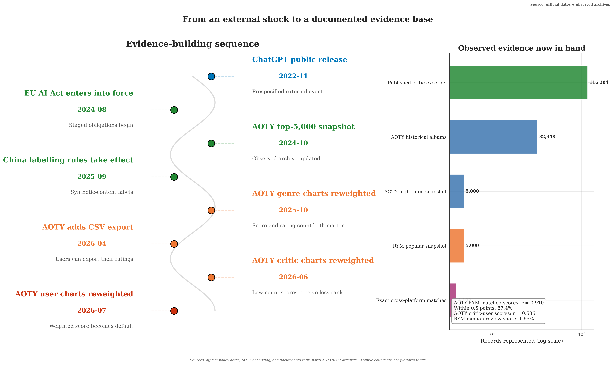

Observed archive
32,358
AOTY / Metacritic historical ratings
Album-level critic and user-score archive covering releases through October 2020.
- Role
- Critic–user + matching
- License
- GPL-2.0
- Boundary
- Historical cross-section
Evidence design
Provenance is recorded as an analytical variable. Observed descriptions, controlled comparisons, method checks, and scenarios are reported in separate evidence classes.
01 · Source archives
Archive dates, selection rules, license status, source URLs, limitations, and SHA-256 checksums are recorded in the repository source manifest.
Album-level critic and user-score archive covering releases through October 2020.
A high-score-selected album snapshot updated on 20 October 2024.
A popularity-selected album snapshot collected on 11 March 2022.
02 · Claim matrix
Filter the matrix by evidence class. “Supported” refers to the narrow descriptive statement shown; causal, longitudinal, and platform-wide interpretations remain outside the archive design.
The selected archives share much of the same album rank order, with different score calibration. Dates and selection rules differ.
SupportedClose score agreement within the exact-matched sample. Platform-wide and longitudinal stability remain untested.
SupportedProfessional and community judgments show a moderate association in the historical archive.
SupportedAOTY Gini = 0.617 and RYM Gini = 0.400 describe within-file inequality; files use different selection rules.
BoundedWritten reviewing is a thin participation layer in the selected popular-album snapshot.
SupportedSeparates 15 published critic excerpts from 15 fixed control texts. Authorship detection and prevalence estimation remain outside the evaluation.
Method onlyDemonstrates implementation behavior on a designed benchmark. Structural change on RYM or AOTY remains untested.
Method onlyOutputs are conditional mechanisms derived from stated parameter values and analyst-coded scores.
ConditionalNo empirical repeated series passed the provenance gate. A dated panel and alternative-explanation design are required.
Open claimVerified policy and AOTY product dates are shown alongside the available evidence. The changelog documents product changes without assigning a cause.

The method page distinguishes descriptive estimators, longitudinal tests, controlled text analysis, and assumption-driven simulations.